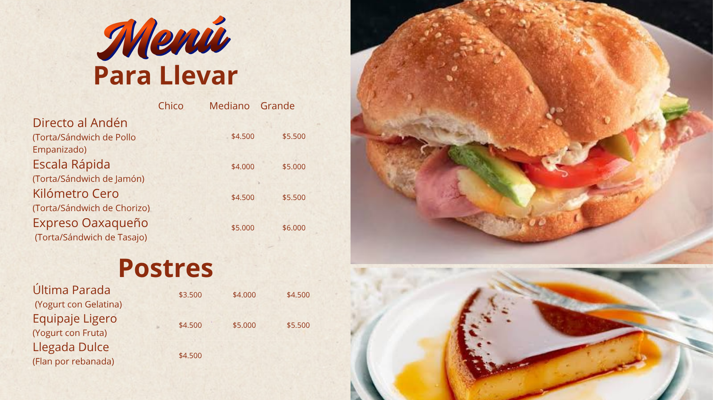
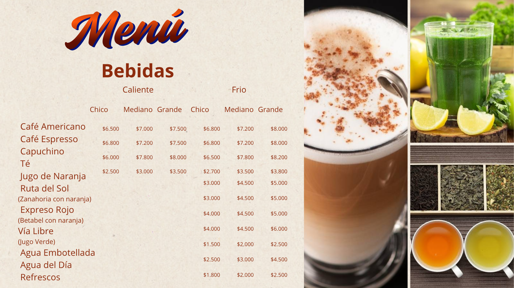

× Cerrar

Nuestro Menú


Sazón e identidad Oaxaqueña
A lo largo del tiempo nos dimos cuenta que en el Estado de Oaxaca no hay un autoservicio, así que nosotras decidimos convertirnos en socias y crear "La estación del sabor". Es un espacio donde se ofrece comida caliente, tradicional y a buen precio, está pensado en la hora de viajar, en llegar a tiempo a la estación de autobús y en quienes tienen hambre, buscamos la comodidad y practicidad de los viajeros.
"La estación del sabor" nace del orgullo oaxaqueño, de dar a conocer el Estado de Oaxaca presentando desayunos, comidas, cenas y hasta para llevar en el autobús. Cada uno de los platillos está inspirado en las regiones y municipios del estado, de esta manera se brinda una variedad de alimentos.
En Oaxaca se está acostumbrado a que un mesero tome la orden y lleve la comida hasta la mesa, un autoservicio es, que el mismo comensal se sirva lo que desee comer, cada platillo cuenta con un precio, históricamente en las zonas aledañas y espacios dentro de las terminales de autobuses han albergado una oferta alimentaria tradicional, pero fragmentada. Los viajeros se han debatido entre la lentitud de un restaurante tradicional y la incertidumbre en materia de higiene de la comida rápida ambulante.
"La estación del sabor" surge como una solución integral frente a esta problemática: Rapidez e innovación en servicio, la calidad e higiene garantizada y el sazón e identidad Oaxaqueña. Se proyecta no solo como un establecimiento único, sino como un modelo operativo eficiente, estandarizado y escalable, capaz de replicar el concepto de autoservicio de comida Oaxaqueña en otros puntos estratégicos de transporte.
Brindar una alimentación rápida, variada, fresca e higiénica que se adapte a los tiempo s y necesidades de los viajeros y visitantes, conservando un servicio eficiente y cómodo cuidando de la buena alimentación de los comensales.
Ser un establecimiento de alimentos y bebidas líder e innovador en la ciudad de Oaxaca, reconocido por excelencia y calidad en servicio adaptándonos al viajero moderno y estableciéndonos como la mejor opción alimenticia para las terminales terrestres.
Inmediaciones de ADO Oaxaca. 5 de mayo 1016 ruta independencia. Los Pirus de Barrio de Jalatlaco, Oaxaca de Juárez, Oaxaca, México.
Con un horario de 24 horas, descansando los días miércoles.

